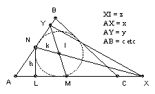

ABC is a triangle with incenter I. M is the midpoint of AC and N is the midpoint of AB. The lines NI and AC meet at X, and the lines MI and AB meet at Y. The triangles AXY and ABC have the same area. Find angle A.
Solution
Solution by Vivek Kumar Mehra
Answer: A = 60o.

By similar triangles, h/r = 1 + z/k. But AI bisects angle NAX, so z/k = c/(2x). Hence h = r(1 + c/(2x) ). Similarly, if h' is the length of the perpendicular from M to AB, we have h' = r(1 + b/(2y) ). Hence (h/r - 1)(h'/r - 1) = 1/4 (*)
We are given that xy = bc. Also r = (2 area ABC)/(a + b + c) = (bc sin A)/(a + b + c) But 2h = c sin A, and 2h' = b sin A. So substituting in (*) and simplifying we get a2 = b2 + c2 - bc. Comparing with the cosine formula, we get A = 60o.

© John Scholes
jscholes@kalva.demon.co.uk
17 Feb 2003
Last updated/corrected 17 Feb 2003